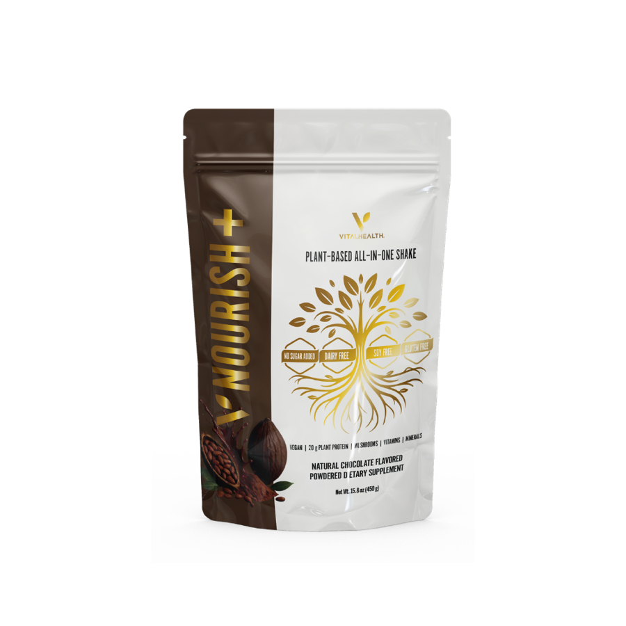

01
Protein without a plate
The part that protects your muscle, in the form that goes down easiest when nothing else will.
The override / one slot a day
Some days you will not want to eat. That is not a willpower problem, it is how the medication works, and forcing down food you do not want is how people end up nauseous and then skip their protein altogether.
Ships from Vital. No subscription required.

In the plan
One slot every day is the one you are allowed to not think about. Drinking your protein still protects your muscle, so this is not a fallback for bad days. It is part of how the 30 days are designed.
Move it wherever the day is hardest. Most people put it in the slot they usually skip.
01
The part that protects your muscle, in the form that goes down easiest when nothing else will.
02
No recipe, no shopping, no standing in the kitchen negotiating with yourself.
03
Keep it before you need it. The day you need it is not the day you will feel like ordering it.
One slot a day that asks nothing of you.
Get Nourish+General wellness information, not medical advice. Talk to your prescriber.